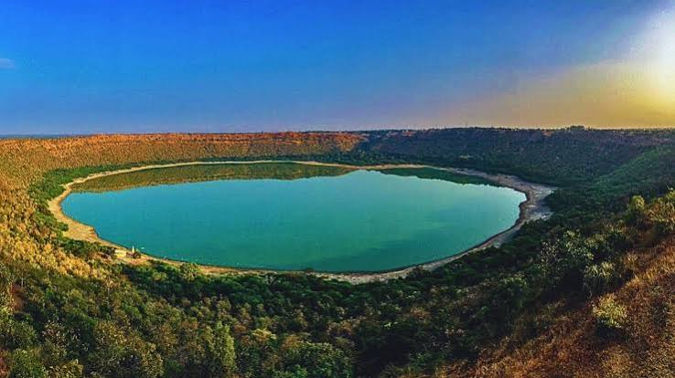

Impact
A meteorite struck the Deccan basalt, releasing immense energy and excavating a crater.
In Maharashtra, a meteorite impact left behind a crater that later became a lake, creating an unusual geological and ecological landscape.
Read the field report ↓
A meteorite struck the Deccan basalt, releasing immense energy and excavating a crater.
Rock was fractured and displaced during impact, leaving a large bowl-shaped depression.
Water accumulated in the crater, forming the lake within its surrounding rim.
Lonar is especially interesting because the impact occurred in basalt, a volcanic rock common in the Deccan region.
The crater is impact-related, rather than a volcanic caldera.
The impact took place in basaltic rock associated with ancient volcanic activity.
The crater hosts a distinctive landscape of water, surrounding slopes, and vegetation.
Impact craters help scientists investigate the effects of high-energy collisions on planetary surfaces. Lonar also offers opportunities to study how life adapts to unusual local environments.
Protecting the lake, crater rim, and nearby habitat helps preserve its geological and ecological value.
Next wonder: The Sundarbans ↗